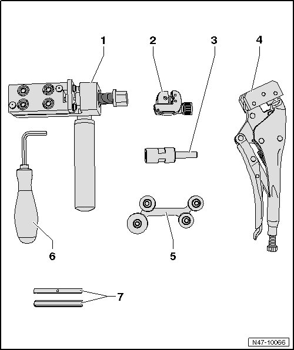
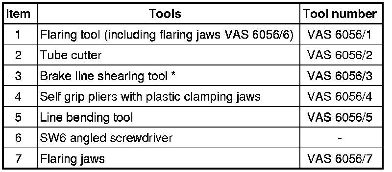

Brake Line Repairing
Brake Line Repairing
Flare brake lines with a 5 mm outer diameter using flaring tool (VAS 6056) without damaging coating. In this way, brake lines can be inexpensively partially replaced in certain cases.
Work with brake line kit (VAG 1356) is NOT t permitted because of the coating and diameter of the black brake lines.
• Brake lines must not be bent more than 90 degrees, otherwise they kink or deform causes unacceptable constriction in the line.
• Disconnect brake lines preferably at the vehicle floor.
• Position of intermediate pieces should be selected so that they cannot rub against moving parts.
• Do not lubricate spindle, clean only with mineral spirits.
Special tools, testers and auxiliary items required
• Flaring tool (VAS 6056)
• Brake charger/bleeder unit (VAS 5234)
Listing of Individual Tools


* The threaded pins (in shaft and at sides) are set and must not be adjusted!